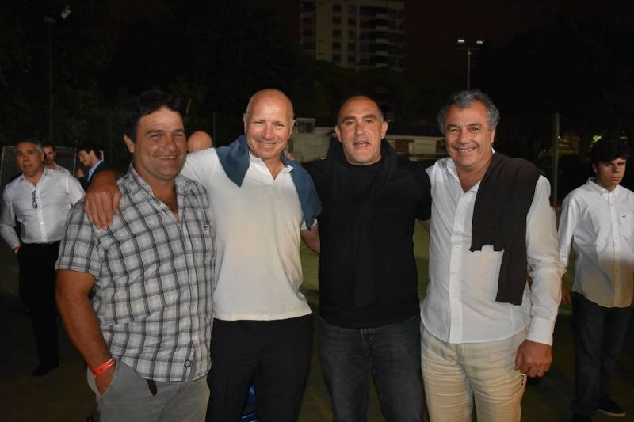
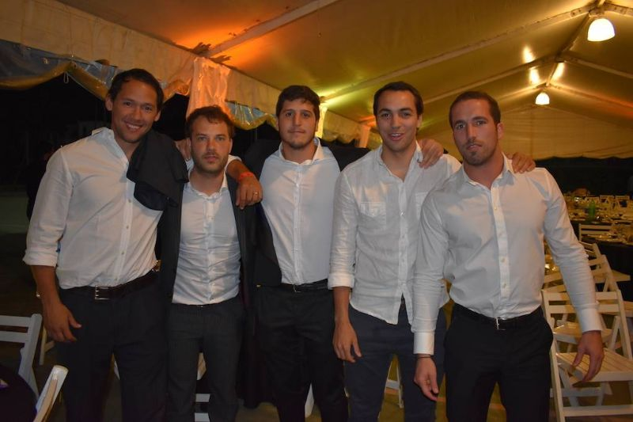

El viernes 1º de diciembre celebramos la fiesta de la cena de rugby donde se otorgaron los reconocimientos a los jugadores de cada una de las divisiones además del tradicional "Cap".
El rugby de Belgrano Athletic tuvo su noche de fiesta, como sucede todos los años, para cerrar un 2017 con un calendario extensísimo para el nivel amateur, con la presencia de 350 asistentes que disfrutaron de las ya clásicas especialidades made in Belgrano, como los chorizos ahumados y la bondiola al disco de Flash, Beve y sus secuaces.
Este año, además de arrancar con el Nacional de Clubes, se volvió al formato tradicional del torneo URBA con dos ruedas, esta vez con 12 (doce) equipos, pero con playoffs de semifinal y final, completando de esta manera 28 (veintiocho) fechas con equipos de primer nivel para la Primera y 22 (veintidós) fechas para el resto de las divisiones de Plantel Superior, además del Seven de Primera.
Para algunos jugadores de la Primera, además, hubo convocatorias al Plan de Alto Rendimiento de la UAR (Ferrito Ferronato, Frankie Gorrissen, Aguja Gómez Di Nardo, la Morsa Espinal); a distintos seleccionados como el de la URBA para el Torneo Argentino (Panchito Cubelli, Ferrito, la Morsa Espinal, Mauro Rebussone, el Vago Retamosa y Tommy Filipuzzi, además de Panchito Gradín como entrenador); al segundo equipo nacional: Argentina XV (Frankie, Ferro y Aguja) y hasta una concentración nacional senior, convocada la semana última por Mario Ledesma, Head Coach de Jaguares, para probar jugadores para su eventual convocatoria al equipo de la franquicia argentina en 2018 (Frankie Gorrissen, Ferrito Ferronato, la Morsa Espinal y Tommy Bruno).
En divisiones Juveniles, el calendario constó de aproximadamente 21 (veintiún) fechas más el Seven y también las distintas convocatorias a seleccionados URBA (Ramón Duggan e Iñaki Schlottmann de M16 y Teo Blacksley de M19) y UAR (Juan Cruz Rodríguez Herrera, M19 y para Seven, Franco Florio de M17). Además hubo también convocatorias al Plan de Desarrollo de URBA como Franco Morales (M16) y Santos de la Serna (M17).
Como puede verse, un calendario por demás nutrido, que requirió de un gran esfuerzo por parte de todo el cuerpo técnico (entrenadores, preparadores físicos, médicos y managers), sostenido durante todo el año.
La cena contó con la impecable animación de Marito Di Rocco lookeado para la ocasión con una remera tipo frac y un saco rosa, que le puso el tono justo de humor y entusiasmo, manejando a la perfección los tiempos de risas y seriedad; con "perlitas" se su sello, como la de rebautizar al Vago como "Iván Retamosa"; decir que ahora en los chicos se ve mucho el "roll out" (en alusión al gesto técnico del "off-load") o la acotación de "Ah,... Caetano Veloso..." al nombrar el apellido del jugador Facundo Caetano, como parte del plantel campeón de M23. ¡Grande Marito!
El puntapié inicial lo dio como es usual, el presidente del club, Sebastián Carroll, con un estilo llano y directo, hablando del presente, donde destacó el gran trabajo realizado por todos a lo largo del año: Comisión Directiva, sub-comisión de rugby y encargados, entrenadores, cuerpo técnico, jugadores e hinchas; del pasado, donde recordó el aporte de los que este año nos dejaron, como Horacio Gramajo, Niceto Anavi y Víctor Di Leo; y del futuro al referirse a los proyectos del clubhouse de Pinazo y del torneo de fútbol infantil, agradeciendo a Marcelo Tecca especialmente por haberse cargado este proyecto al hombro.
Luego de la apertura del "presi", se sucedieron los clásicos discursos: Marcelo "Chapa" Ruiz como presidente de la sub-comisión de rugby hablando de lo que significa el compromiso de todos con el club y sus valores, sobre todo el del tercer tiempo de Infantiles como el mejor de la URBA; Panchito Cubelli como capitán de la Primera agradeciendo a todos y contando una anécdota de hace 20 años cuando era todavía jugador de infantiles, comparando la realidad de ese entonces de Belgrano que peleaba el descenso a la realidad de hoy, campeón el año pasado y protagonista hoy en todas las divisiones de Plantel Superior.
En el medio se otorgaron los reconocimientos a mejor jugador y jugador revelación de cada una de las divisiones, desde M15 hasta Primera. Todas estas acciones fueron además acompañadas por sendos videos, editados todos con gran generosidad por Santiago "Colo" Sendón.
PREMIO AL MEJOR JUGADOR
M15: Manolo Otero M16: Félix Ceñal M17: Jeremy Smith M19: Juan Cruz Rodríguez Herrera M23: Ramiro Brie Pre-"D": Tomás Güemes Pre-"C": Lautaro "Laucha" Pignocchi Pre-"B": Tweety Peyloubet Pre-"A": Felipe "Pipa" Adrogué Intermedia: Juan Martín "Vago" Retamosa Primera: Benjamín "Morsa" Espinal
También hubo un reconocimiento a la M23, campeona del URBA Top 12 y acá compartimos su video:
Cada entrenador subió al escenario para entregarle el premio a los jugadores y en este sentido, un punto alto de la noche fue el discurso de Horacio "Flaquito" Cangueiro, entrenador de M19, que parado con la ayuda de Vallarta y el acompañamiento en el escenario de los demás entrenadores de la división, nos dio a todos una lección de superación: "Todos hicieron que mi vida la diéramos vuelta. Cuando nací, ni el más optimista hubiera pensado que a los 27 años iba a estar recibido, laburando e integrado en el club entrenado a una división...". Lejos de centrar su testimonio en sí mismo y las cosas que logró a sus 27 años, Horacito hizo parte de sus logros a todos: "Yo les tengo que hacer un monumento por lo que hicieron por mí...".
También hubo tiempo para el reconocimiento de Matías "Matute" Howard (camada 97), integrante de Pumpas XV en el mundial de Mixed Ability Rugby que ganó dicho equipo. El premio fue entregado a "Cuca" Salvatori en representación de Matu, de manos de Juan Cruz Güemes (camada 2002), un reciente integrante de los Pumpas XV (video gentileza de Santiago Sendón):
El video principal, bajo el lema "Con los grandes no se jode", fue especialmente dedicado a grandes partidos de este año, como el de la ida en Pino con Alumni con la conversión final del Negro Rosati, o el del triunfo contra Hindú con el try de Tommy Bruno -después de una monumental jugada colectiva desde las 25 yardas propias- (video gentileza de Santiago Sendón):
El corolario final llegó con la entrega del "Cap", la máxima distinción del club, de parte de Francisco Ferronato (ganador en 2016) a Panchito Gradín, el nuevo premiado de 2017, destacando las diferentes facetas de Panchito: "Lo que hace, lo hace en silencio. Cuando hay que conciliar, concilia y cuando hay que ir al frente va al frente, es entrenador de Belgrano hace 7 años, bicampeón con Buenos Aires y entrenador de M16...".
Panchito, entre emocionado y descolocado por lo que significa este premio, "Es muy grosso por la gente que lo recibió..." siguió con su mensaje de humildad y de trabajo, reconociéndose parte de un equipo liderado por "el Pelado" Willy Tramezzani "...que es el que labura, y nosotros somos un equipo cuyo gran mérito es hacer lo que dice el Pelado y ser hinchas de Willy a full.... (...) ... y le estás dando mucho al club pero te estás llevando más de lo que das...".
Fue una gran noche, llena de energía, donde todos los discursos y testimonios tuvieron como común denominador el agradecimiento y reconocimiento al esfuerzo y al compromiso de todos, la tranquilidad de haber dejado todo y las ganas de ir por más en 2018.
Por eso y por mucho más: ¡Salud!
*Todas las fotos son gentileza de Hernán "Huevo" Posse
Chester y Huevo
Román, Willy, Topo y Aldo
Negro Rosati, Tweety Peyloubet, Vago Retamosa, Manu Spitaleri y Chucha Uriburu


Seguinos en Instagram y en Twitter: @marrondelrugby
¡Compartí esta página en tus redes!